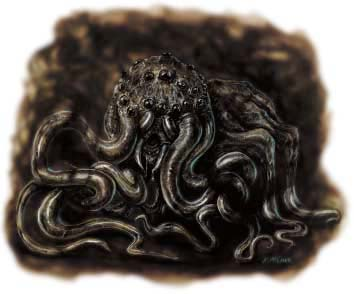

中型异怪（跨位面）

| 生命骰： | 9d8+9（49HP） |
| 先攻： | +4 |
| 速度： | 20英尺，攀爬20英尺 |
| 防御等级： | 26（+4敏捷，+8天生，+4偏斜），接触18，措手不及22 |
| 基本攻击／擒抱： | +6/+9 |
| 攻击： | 触手耙抓 +10近战 |
| 全力攻击： | 4次触手耙抓 +10近战与啮咬 +5近战 |
| 伤害： | 触手 1d4+3，啮咬 1d6+3外加力量伤害 |
| 面宽／触及： | 5英尺/5英尺（触手10英尺） |
| 特殊攻击： | 精通攫抓、阴影丝线、类法术能力、力量伤害 |
| 特殊能力： | 全域视野、寒冷抗性10、黑暗视觉60英尺、伤害减免5/+1、快速医疗3、阴影跳跃、阴影物质护甲、法术抗力16、阳光脆弱、触手再生 |
| 豁免： | 强韧 +4，反射 +7，意志 +9 |
| 属性： | 力量 17，敏捷 18，体质 12，智力 15，感知 16，魅力 17 |
| 技能： | 攀爬 +18，专注 +7，躲藏 +21，聆听 +10，潜行 +11，搜索 +9，侦察 +10 |
| 专长： | 警觉、战斗反射、猛力攻击、武器娴熟 |
| 地域： | 任何陆地（幽影位面） |
| 组织： | 单独或小群（2-4） |
| 挑战等级： | 10 |
| 宝物： | 标准 |
| 阵营： | 通常中立邪恶 |
| 进化： | 10-15HD（中型）；16-27HD（大型） |
暗织蛛是来自幽影位面的邪恶的异形存在，它们发现，与故乡相比，物质位面拥有更为丰富的猎场。作为相对较新抵达物质位面的生物，暗织蛛试图更多地了解这一位面及其原住民的力量，企图借此夺取统治权。
见过暗织蛛的生物中，很少有谁真正了解它究竟长什么样。每只暗织蛛都栖息在一片不断翻涌的超自然阴影丛中，生物必须深入这片黑暗的深处才能找到它。在阴影的中心，好奇的探索者或许能瞥见一个形似蜘蛛的躯体，它被一层不断变幻、具有保护作用的黑暗所笼罩。
暗织者的真实形态与蜘蛛仅有几分神似。其灰色的肉质躯体分为两段，每一段都长有四条触手。前段布满了密集的、类似蜘蛛的复眼，腹面则生有一张长着致命毒牙的嘴。暗织者通常以八条触手着地行走，但它也能将前段躯体直立起来移动；此时，前方的触手便可腾出，用于攻击敌人或操纵物体。
暗织蛛会说深渊语、通用语和炼狱语。
暗织蛛严重依赖其用阴影之网笼罩战场的能力。能够看透自己创造的阴影，暗织蛛更喜欢隐藏在效果中并用暗示引诱猎物进入。如果猎物拒绝进入阴影丝线，暗织蛛便会利用黑暗术与困惑术令生物陷入迟疑，同时将阴影丝线的覆盖范围移动至其所在之处。当生物接近效果中心时，暗织蛛会抬起身，用前四条触手猛击，希望缠住对手并吸干其力量。
暗织蛛非常依赖其用阴影之网笼罩战场的能力。它能够看穿自己所制造的阴影，并倾向于藏身其中，通过某种暗示将猎物诱入阴影区域。如果猎物拒绝进入阴影丝线，暗织蛛便依靠黑暗术与困惑术让该生物犹豫，同时将阴影丝线区域移动过去覆盖猎物。当生物接近该效果中心时，暗织蛛会抬起身，用其前四条触须猛击，希望缠住对手并吸干其力量。
精通攫抓（Ex）：若暗织蛛以触手耙抓命中至少比自身小一个体型等级的对手，它在造成正常伤害的同时，可以尝试以一个自由动作发起擒抱（擒抱加值+9），且不会引发借机攻击。若成功抓住对手，则自动以其啮咬命中，造成1d6+3点伤害和2d4点力量伤害。此后，暗织蛛可以选择正常进行擒抱，或仅用其触手抓住对手（擒抱检定有-20罚值，但暗织蛛本身不被视为被擒抱）。无论哪种情况，它在后续回合中每成功一次擒抱检定，都会自动造成啮咬伤害。
阴影丝线（Su）：随意使用，暗织蛛可以创造出一团蛛网般的超自然半固体阴影光环，从其向外60英尺范围散发。暗织蛛可以正常看透阴影丝线，但其他生物则很难做到。每完整的5英尺阴影丝线提供四分之一隐蔽。因此，位于阴影丝线中距另一生物10英尺的生物拥有二分之一隐蔽，而距20英尺的生物则拥有完全隐蔽。位于阴影丝线中的生物对5英尺范围内的生物没有隐蔽。拥有黑暗视觉的生物也会受到这些效果影响，阴影丝线甚至能迷惑盲视，但真知术可让生物正常看透它们。
任何进入该区域的生物都可以自由向暗织蛛移动，但任何向其他方向移动的尝试都会受到半固体阴影丝线的阻碍。试图如此移动的生物必须进行力量检定或脱逃检定；检定结果每超过10的完整5点，生物便可以向远离暗织蛛的方向移动5英尺。若生物与暗织蛛相邻（5英尺范围内），只要它保持与暗织蛛相邻，就可以自由移动。受行动自如法术保护的生物免疫阴影丝线的约束效果。
暗织蛛可以随意移动并带动阴影丝线区域。生物不会受到暗织蛛移动丝线的影响，但朝向暗织蛛的方向很可能会改变。丝线内的生物无需猜测暗织蛛位于哪个方向；当它们试图远离时，阴影丝线会扭曲缠结以阻挡所有其他路线，这一点会立即变得明显。当没有行动自如的生物试图逆着丝线移动时，暗织蛛会立即察觉其位置，即使由于隐形而无法看到该生物。
暗织蛛免疫其他暗织蛛的阴影丝线，并能看透它们。
类法术能力：3次/日――困惑术、黑暗术、暗示术、巧言术、蛛网术；1次/日――行影术。施法者等级13；豁免DC 13 + 法术等级。
力量伤害（Su）：任何被暗织蛛啮咬的生物受到2d4点力量伤害（重击时为4d4点）。暗织蛛通过吸干受害者的力量来"进食"。
全域视野（Ex）：暗织蛛可以同时看到所有方向。因此，它在搜索和侦察检定上获得+4种族加值，并且无法被夹击。
快速医疗（Ex）：只要至少有1点生命值，暗织蛛每轮恢复3点失去的生命值。快速医疗无法恢复因饥饿、口渴或窒息失去的生命值，也不能让暗织蛛重新长出或接回失去的身体部位。
阴影跳跃（Su）：暗织蛛可以在阴影之间旅行，如同通过任意门。限制是魔法传送必须在至少有一些阴影的区域开始和结束。暗织蛛每天总共可以进行320英尺的阴影跳跃；该距离可以分成多次以10英尺为单位的跳跃。因此，一次跳跃35英尺的暗织蛛会用掉当天阴影跳跃限制中的40英尺。
位于自身阴影丝线中的暗织蛛总是有足够的阴影进行跳跃，除非将等同于昼明术亮度的光源带到其5英尺范围内。
阴影物质护甲（Su）：暗织蛛被半固体的阴影物质护甲笼罩，这给予它防御等级+4偏斜加值以及躲藏检定+10环境加值（已计入上方数据）。阴影物质护甲不提供隐蔽，也不提供进行阴影跳跃所需的阴影。该护甲在反魔法场中消失，但一旦暗织蛛离开该区域便立即恢复。
阳光脆弱（Ex）：当暴露于阳光或等同于昼明术的光线时，暗织蛛在所有攻击、豁免、检定和伤害掷骰上受到-2士气罚值。此外，它无法通过快速医疗恢复生命值。
暗织蛛的阴影丝线为该生物提供对丝线区域外光线的完全隐蔽。丝线内的任何魔法光源必须位于暗织蛛5英尺范围内才能影响它，因为阴影丝线提供的隐蔽。
触手再生（Ex）：敌人可以攻击暗织蛛的触手，但仅限于那些实际正在抓住对手的附肢。一条触手的防御等级为27（接触19），可承受20点伤害。失去一条触手不会伤害该生物（即该伤害不计入其生命值总数），它会在一天内重新长出该肢体。
技能：暗织蛛在攀爬检定上获得+8的种族加值，并且他可在攀爬检定中总是取10，即使注意力被分散或处于危险时也一样。
暗织蛛天性孤僻，但它们经常把危险的掠食者当作"宠物"饲养。当暗织蛛吸干一个生物的全部力量（将其力量值降至0并使其无助）时，它通常会把该生物带走，并找到一只大型食肉动物或愿意吃掉它猎物的邪恶生物部落。暗织蛛随后用阴影丝线缠住该掠食者，迫使它向自己移动。当它靠近时，暗织蛛会把仍然活着的猎物当作奖励丢下并后退，让该生物吞噬被削弱的对手。暗织蛛会重复此行为数次，直到掠食者开始依赖它获取食物并将其视为盟友。暗织蛛的巧言术与暗示术能力通常有助于巩固这种关系。暗织蛛的巢穴经常由这类掠食者守卫，有时甚至有掠食性生物部落（如巨魔）会崇拜暗织蛛，并协助它追求支配他人的梦想。